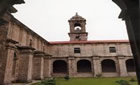
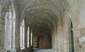

|
 |
 |
 |
| COUNTRY HOUSE |  |
LOCATION | |
CONTACT US | MONASTERY | GOLF | |
ROUTES | |
BEACHES | |
CELEBRATIONS | |
|
|
|
THE MONASTERY OF ARMENTEIRA
 Armenteira is a word derived, very probably, from the Latin armentum, which means cattle, horses or cows. Nowadays, and for ages, it is the name of a stream, a parish and a monastery. The stream flows happy and singing until it ends in the waters of the river Umia. The parish, with about one thousand inhabitants, distributed in fifteen villages, belongs to the council of Meis (Pontevedra) and to the diocese of Santiago. The monastery, ancient and reputable, has given name to the place. The spot where the monastery is situated is very beautiful and historic. It is called O Salnés. By force of little philological “tricks”, Celso García de la Riega has defended that Salnés means “land of moon adorers”; but no doubt it comes from the word “salinas”. It was the times of “land of salt mines”. Even in the ninth century there exists the evidence guaranteed by documents, there were salt mines in the council of Noalla and in the island of Arousa. Nowadays the zone is very famous for its wines. Otero Pedrayo has written that “the charm of the real Salnés lies on the wavy carpet of vineyards cared like gardens”. And further: “its wines are the red swordy, of a regular strength, and the white albariño, with sparkles, a rebelesian wine, thought to be derived from French plants brought by the monks of the Císter of Armenteira and other monasteries”. The Salnés belonged time ago to the Terra de Santiago, domain of large dimensions, autonomy and power, controlled by the archbishops and divided into possessions or feuds, claimed by rich men and gentlemen of distinguished lineage and sounded family names. Land, therefore, full of towers and castles, which defended it from the incursions of the Normans, Saracens and all kind of pirates, but too often, hide-outs of nobles thirsty for piling up treasures stolen from travellers and poor countrymen. It was also land of monks and monasteries. It was passed by Saint Fructuoso and the crowd of his disciples, and later by Saint Rosendo, surrounded by the double prestige of his nobility and sanctity. From very old times the zone was filled with monasteries: San Salvador de Lérez, San Xoán de Poio, Calogo, Sobradelo, Lantaño, San Xulián de Arousa, Sobrán, Nogueira, Armenteira… Almost all of them disappeared because of the centurias and calamities, or they were turned into priories and farms of powerful monasteries, like San Martín Pinario or San Pelayo de Antealtares. Ramón Cabanillas has drawn up with affection the figure of the priors, “ledos e fidalgos”, who administered the monastic properties: |
||
|
Mestres na vida, na virtú e na cencia, Que sabían ¡ou tempos esquencidos! Cantal-a misa, escorrental-as meigas, Acoller y-amparar orfos e probes, Rir co-as rapazas, consellal-as vellas, Darlle leito e xantar ós pelegrinos, Pechar por fuero as portas da sua igrexa á xusticia do rei, cobral-os diesmos E disponer vendimias e trasegas. |
 | |
|
Origins of the monastery In Armenteira the majestic Cistercian monastery of the twelfth century is raised, Santa María de Armenteira. The enchantment of the place seizes immediately of the spirit of the visitor. Located in a side of the mountain of Castrove, dominating a high and beautiful gorge, gathered, solitaire, it breathes peace and devotion. The authors dissent about the foundation of Armenteira. Some of them attribute it to San Fructuoso, others, to Count Raimundo of Burgundy. Navascués Palacio affirms that abbot Ero “put under a very old monastery the Cistercian discipline”. They are simple suppositions. There is nothing against that we continue considering Father Armenteira the first founder, whom the faithful of the region continue invoking with the name of San Ero. In the traditional life of he himself it is necessary to make an important distinction. The legend of his secular fascination constitutes a simple adaptation of a literary subject –“the monk and the little bird”- very old and with several variants, as it was demonstrated many years ago by the erudition of Don J.F. Filgueira Valverde. Apart from this there can be historical elements, and probably there are. Of course, Ero –or Hero- was a Galician name well documented at least in the centuries X, XI and XII. In the first half of the twelfth century there lived a noble gentleman with that name together with his wife in his possessions of Armenteira; his palace, “huge for that time”, it still existed, much deteriorated, in time of Father Duarte. As the couple did not have children, they would decide to turn their house and patrimony into one of the several familiar monasteries and therefore, doubles then existing. Double convents or monasteries were those where there was a community of monks and another one of nuns. But, in a few years, probable at the request of Alfonso VII, eager on colonizing the country covering it with monasteries of white monks, Ero would decide to affiliate his foundation to the Cister Order. San Bernardo, already near his death, would send four of his monks, as the tradition says. And, as the Order did not accept double monasteries, Eros’s wife and the women who had followed her to become devotes to God, would have to retire to the place that soon was called La Freiría, perhaps in order to affiliate itself also with the Cistercian reform? In the properly historical field, the documentation available allows us to attend the formation of the territorial patrimony of a rising monastery to a new life. As it is well known, there were no donations for the familiar monasteries; they did not need them; its economic base was the familiar patrimony. Abbot Ero of Armenteira did not start to receive donations after having decided to add his monastery to the service of the Cistercian Order. The three older documents of the conventual file are dated in 1151: the first one testifies the donation of an inheritance in Gondes; the second, the one of another inheritance in Vilar and Mauriz, in exchange for a cow and its calf; the third one, dated 5th December, is a solemn royal diploma for which Alfonso VII donates to the monastery the reserve of Barrantes, all the crown of Armenteira and Gondes, with its inheritances and salt mines, as well as Castromao, and he grants the boundary privilege to the monastery, Gondes and Castroman, indicating its limits. It is very likely, not to say surely, that Armenteira was already in 1151 a monastery of the Cister. Its holder was Santa María, according to the general rule of the Cistercians, and, according to one of the documents mentioned, Ero and his community lived “sub Regula Sancti Benedicti” – under the Rules of San Benito-; what does not mean at all that they were Benedictines of black habit –“black monks”, as they said then-, because the Cistercians also kept the Rule with “cogullas blancas” (white habits). And, what is more decisive, the same formula “sub Regula Sancti Benedicto” reappears in documents dated 1176,1187, and 1198, among others. The first mention of Armenteira as a Cistercian monastery is probably found in a statute of the general chapter of 1190. Source: Council of Meis |
||
| Country House | Location | Contact Us | Monastery | Golf Club | Routes | Beaches | Celebrations | ||